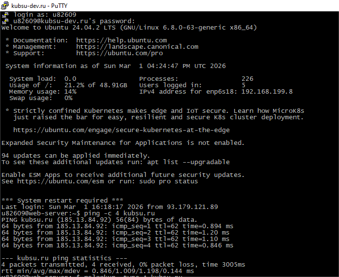
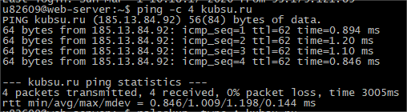
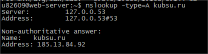
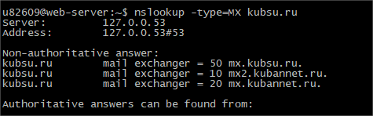
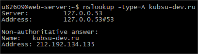
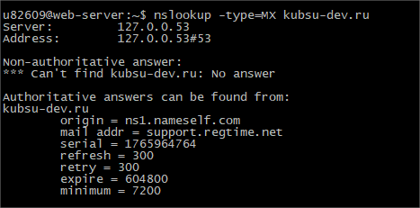
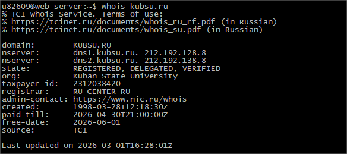
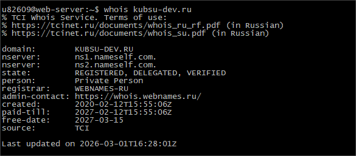
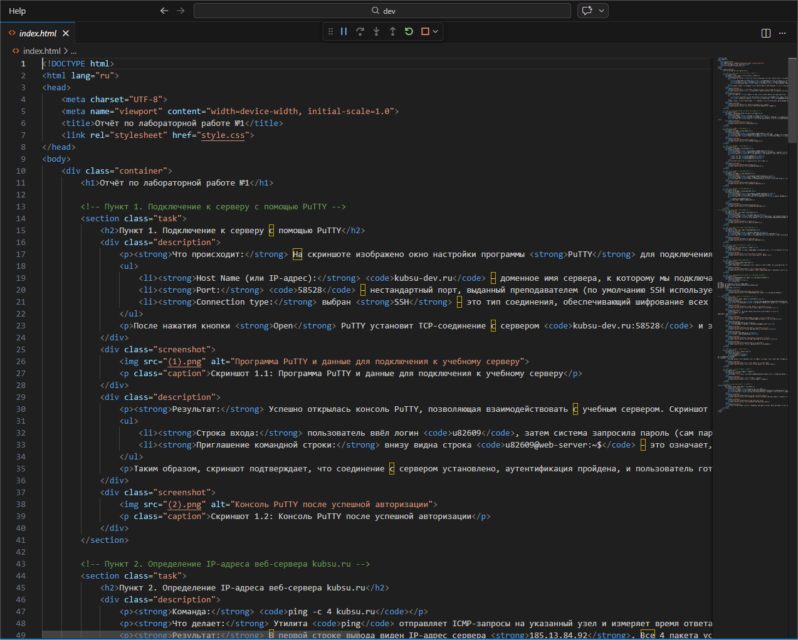

Отчёт по лабораторной работе №1
Программно-аппаратные средства Web | Студент: u82609
Пункт 1. Подключение к серверу через PuTTY (SSH)
Что делалось: Настроено подключение к серверу kubsu-dev.ru через PuTTY с нестандартным портом 58528 по протоколу SSH.
- Хост:
kubsu-dev.ru - Порт:
58528 - Логин:
u82609
После успешной авторизации открылась командная строка сервера.

Скриншот 1.1: Настройка PuTTY для подключения к kubsu-dev.ru:58528

Скриншот 1.2: Успешный вход в систему (терминал после авторизации)
Пункт 2. Определение IP-адреса kubsu.ru через ping
Команда: ping -c 4 kubsu.ru
Результат: IP-адрес веб-сервера 185.13.84.92. Потеря пакетов: 0%, среднее время ответа ~1 мс.

Скриншот 2: ping kubsu.ru
Пункт 3.1. A-запись домена kubsu.ru
Команда: nslookup -type=A kubsu.ru
Результат: kubsu.ru → 185.13.84.92

Скриншот 3.1: A-запись kubsu.ru
Пункт 3.2. MX-запись домена kubsu.ru
Команда: nslookup -type=MX kubsu.ru
Результат (почтовые серверы):
- 10 → mx2.kubannet.ru (наивысший приоритет)
- 20 → mx.kubannet.ru
- 50 → mx.kubsu.ru

Скриншот 3.2: MX-запись kubsu.ru
Пункт 3.3. A-запись домена kubsu-dev.ru
Команда: nslookup -type=A kubsu-dev.ru
Результат: kubsu-dev.ru → 212.192.134.135

Скриншот 3.3: A-запись kubsu-dev.ru
Пункт 3.4. MX-запись домена kubsu-dev.ru
Команда: nslookup -type=MX kubsu-dev.ru
Результат: MX-записи отсутствуют (домен не настроен для приёма почты).

Скриншот 3.4: MX-запись kubsu-dev.ru (нет записей)
Пункт 4.1. Дата регистрации домена kubsu.ru (whois)
Команда: whois kubsu.ru
Дата регистрации: 1998-03-28 (28 марта 1998 года)
Домен оплачен до 30 апреля 2026 года.

Скриншот 4.1: whois kubsu.ru
Пункт 4.2. Дата регистрации домена kubsu-dev.ru (whois)
Команда: whois kubsu-dev.ru
Дата регистрации: 2020-02-12 (12 февраля 2020 года)
Домен оплачен до 12 февраля 2027 года.

Скриншот 4.2: whois kubsu-dev.ru
Пункт 5.1. Локальный репозиторий и файлы
На локальном компьютере создана папка web_hw1, содержащая:
index.html— отчётstyle.css— стили- Все скриншоты
(1).png ... (21).png
.png)
Скриншот 5.1: Содержимое локального репозитория
Пункт 5.2. GitHub репозиторий
Репозиторий создан на GitHub и загружен через git push.
Ссылка на репозиторий: github.com/Rusificator/web-hwl
.png)
Скриншот 5.2: Репозиторий на GitHub
Пункт 5.3. Клонирование на учебный сервер
На сервере выполнен git clone репозитория. Настроен SSH-ключ для доступа к GitHub.
.png)
Скриншот 5.3: Клонирование репозитория на kubsu-dev.ru
Пункт 5.4. Перенос в каталог www и публикация
Файлы скопированы в ~/www/hw1/.
Итоговый URL: http://u82609.kubsu-dev.ru/hw1/
.png)
Скриншот 5.4: Копирование файлов в каталог www
.png)
Скриншот 5.5: Проверка — страница доступна по HTTP
Пункт 6. Копирование файлов через SFTP (FileZilla)
С помощью FileZilla (протокол SFTP, порт 58528) файлы были скачаны с сервера обратно на локальный компьютер.
- Сервер:
kubsu-dev.ru:58528 - Логин:
u82609 - Удалённый каталог:
/home/u82609/www/hw1/
.png)
Скриншот 6.1: FileZilla — процесс скачивания файлов
.png)
Скриншот 6.2: FileZilla — передача завершена, файлы на локальном компьютере